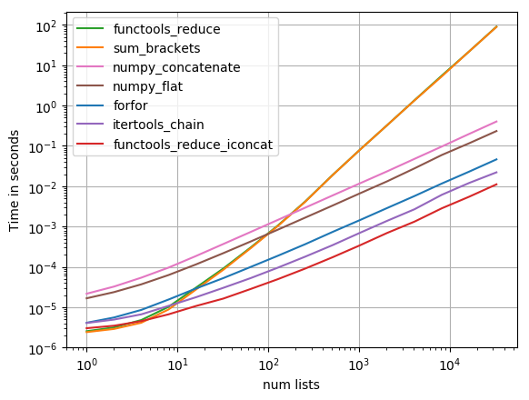

week-2
Algorithm
19. Remove Nth Node From End of List
- 首先想到的解决办法是先遍历链表，同时存储游标（从0开始）和节点对应关系到字典，获取到链表长度 L，要删除的节点就是
L - n。时间复杂度是O(n), 空间复杂度O(1)。但是此方法需要额外判断边界条件，故加入哨兵节点进行优化。 - 引入
哨兵，使用快慢指针的方式，快指针先走n+1步，确保两个指针之间相差 n 个节点，然后两个指针同时前进，快指针到达最后一个节点的next时，慢指针正好指向从后数第 n 个节点。

# Definition for singly-linked list. # class ListNode(object): # def __init__(self, x): # self.val = x # self.next = None class Solution(object): def removeNthFromEnd(self, head, n): """ :type head: ListNode :type n: int :rtype: ListNode """ dummy = ListNode(0) dummy.next = head fast = slow = dummy for _ in range(n): fast = fast.next while fast.next: fast = fast.next slow = slow.next slow.next = slow.next.next return dummy.next
Review
Putting comments in code: the good, the bad, and the ugly
这是一篇关于代码注释的文章，很多时候我们都听到过 Good code is self-documenting ，但是否要添加注释需要视情况而定，不能一味为了展示代码质量而忽视了
注释。
注释一般分为两类， 文档型注释 和 声明式注释 。
文档型注释
如果你是在维护一个公共库、开源库、框架或者是 API，这时就应该在代码中编写规范且统一的注释，并且能够与 声明式注释 明显区别开，
方便调用者能够清晰明了地了解代码的使用方法，同时也能够利用一些工具，将注释提取出来，形成一份独立的文档。
声明式注释
声明式注释 就是给对代码维护、重构或扩展的人员看的了，当然，也包括未来的自己。添加这类注释时，首先要审视代码在可读性上是否还能改进，若通过优化代码可以避免注释，那就可以不必添加。
- 不用添加无意义的注释，比如对代码的解释
- 可以适当添加幽默点儿的注释，但不要试图用此方法掩饰差代码
- 对自己反复思考和实践后认为最好的解决方案处适当添加注释，避免其他开发人员在此重复浪费时间去优化
文章评论中提到了比较重要的一点，测试用例也是注释的一种形式。有时可能比直接接阅读代码，更能够清晰、快速的读懂其中的用法和含义。
Tip
之前解决过两层嵌套的列表，最容易想到的是 forfor 方法，另外发现比较好玩的方法是使用 sum 方法，但是这种方法效率不较低，实际上只是把列表中的元素（列表）相加，
等同于 [1, 2] + [3, 4] = [1, 2, 3, 4] ，会额外创建一个列表并复制最终结果到新列表，而且也只支持两重嵌套。官方文档中，对于可迭代元素建议使用 itertools.chain() 。
stackoverflow 上有回答对于各种操作进行了时间上的对比，最快的方法是 functools_reduce_iconcat
How to flat list nested list?

# coding: utf-8 import functools import itertools import numpy import operator import perfplot def forfor(a): return [item for sublist in a for item in sublist] def sum_brackets(a): return sum(a, []) def functools_reduce(a): return functools.reduce(operator.concat, a) def functools_reduce_iconcat(a): return functools.reduce(operator.iconcat, a, []) def itertools_chain(a): return list(itertools.chain.from_iterable(a)) def numpy_flat(a): return list(numpy.array(a).flat) def numpy_concatenate(a): return list(numpy.concatenate(a))
Share
之前没写过 ftp 服务上传文件，正好之前有这个需求，实现了一下。需要注意的有两个点，一个是加入对文件类型的限制，避免非法文件上传至服务器；另外一个是需要动态 建立不存在的子目录；上传完毕后要记得关闭连接。
# coding: utf-8 import ftplib class Ftp(object): BASE_DIR = 'ftp/test' ALLOWED_EXTENSIONS = set(['png', 'jpg', 'jpeg']) def __init__(self, host, port, user, passwd): self.host = host self.port = port self.user = user self.passwd = passwd def connect(self): ftp = ftplib.FTP() ftp.connect(self.host, self.port) ftp.login(self.user, self.passwd) return ftp def upload(self, user_dir, file_name, file): self._check_file(file.filename) f = self.connect() dir_ = '{}/{}'.format(self.BASE_UPLOAD_DIR, user_dir) for d in dir_.split('/'): self.chdir(f, d) try: f.storbinary('STOR {}'.format(file_name), file) except Exception: raise finally: f.close() def _check_file(self, filename): if '.' not in filename: return type_ = filename.rsplit('.', 1)[1].lower() if type_ not in self.ALLOWED_EXTENSIONS: raise ValueError('unsupported file type') return type_ @staticmethod def chdir(ftp, dir_): if Ftp.directory_exists(ftp, dir_) is False: ftp.mkd(dir_) ftp.cwd(dir_) @staticmethod def directory_exists(ftp, dir): filelist = [] ftp.retrlines('LIST', filelist.append) return any(f.split()[-1] == dir and f.upper().startswith('D') for f in filelist)